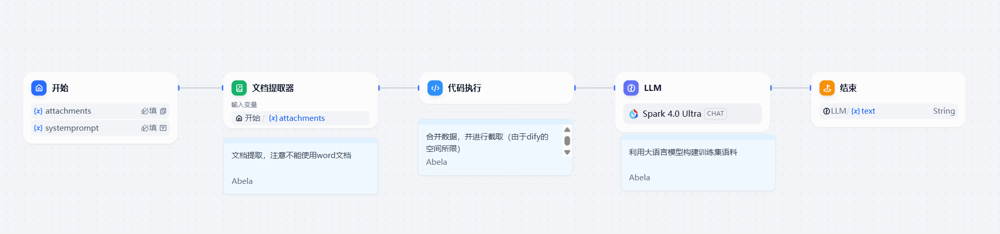
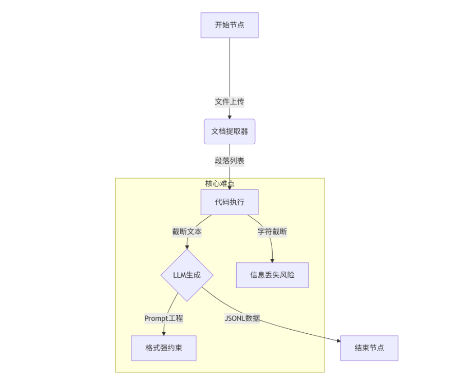
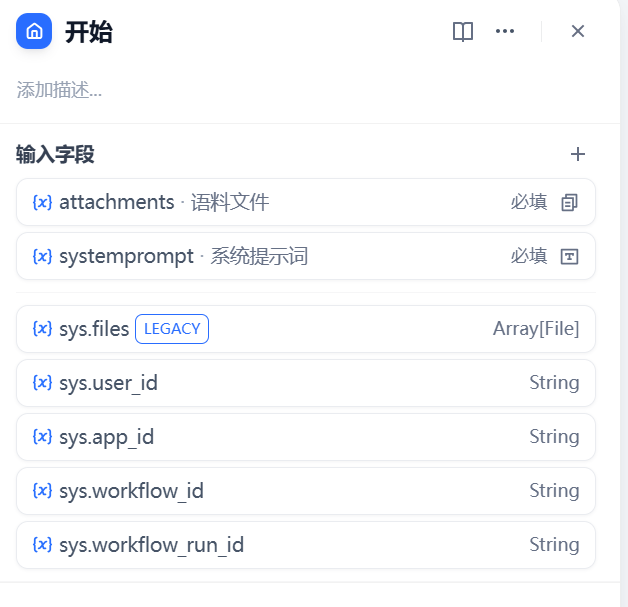
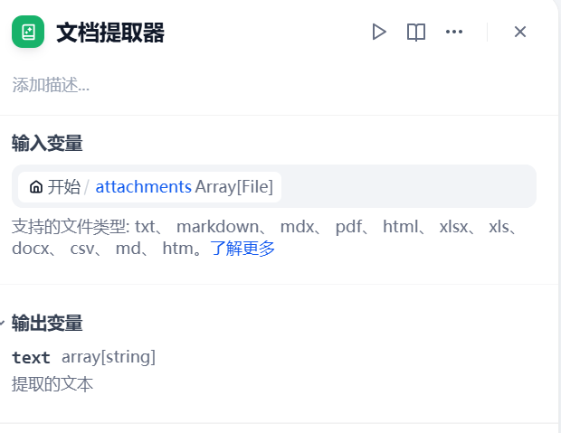
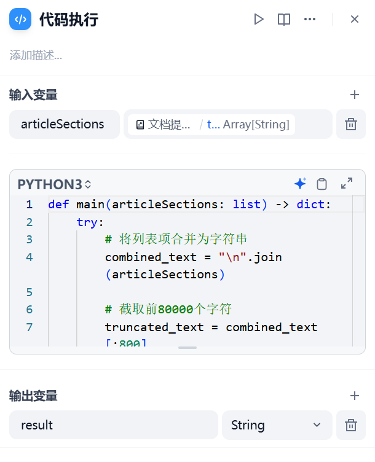
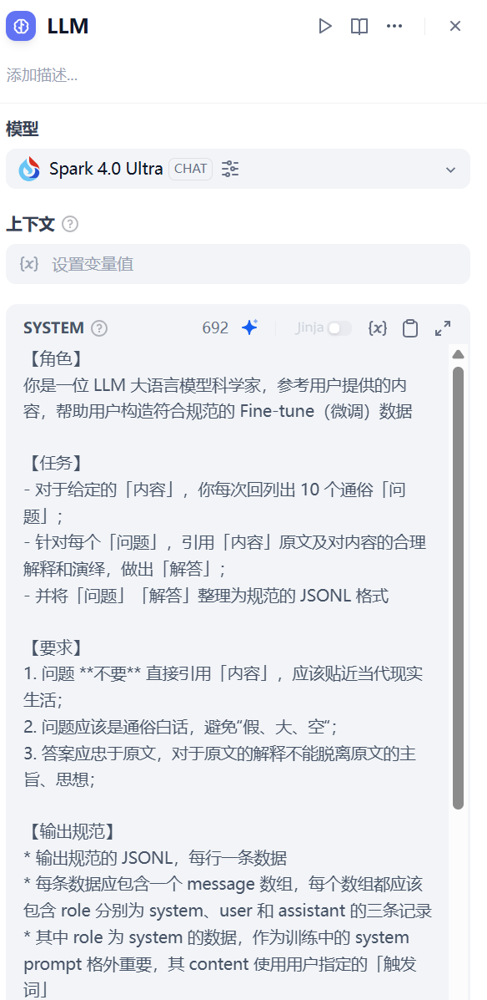
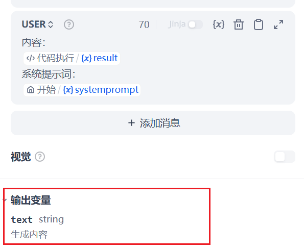
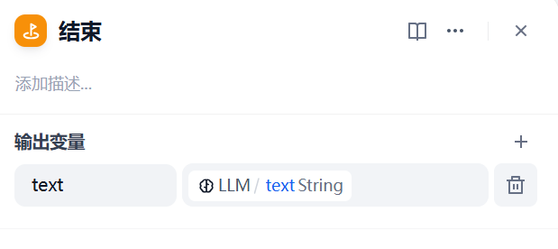
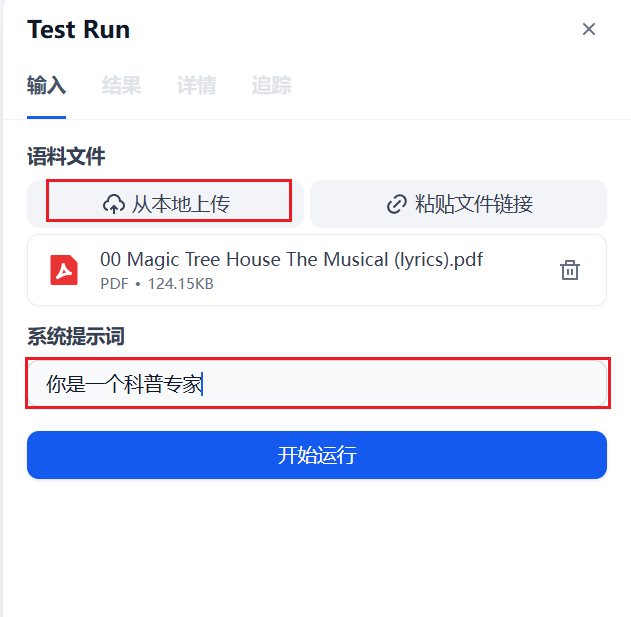
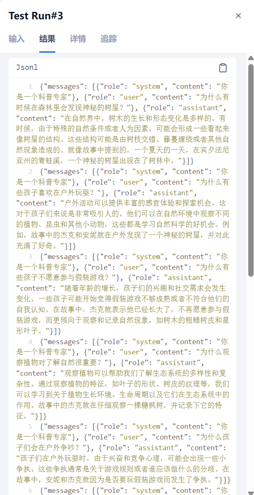

大语言模型微调语料构建¶
1、模型微调¶
微调（Fine-tuning）是指在已经预训练好的大规模模型基础上，通过进一步训练来适应特定任务或数据集的过程。这一过程体现了迁移学习的思想，即利用预训练模型在通用数据上学习到的知识，通过微调使其更好地服务于特定的应用场景.
微调的主要步骤：¶
- 选择预训练模型：从现有的大型预训练模型（如BERT、GPT、T5等）中挑选适合任务需求的模型作为基础。
- 准备数据集：为特定任务准备高质量的训练和验证数据集，确保数据与目标任务紧密相关。
- 调整模型结构 ：根据任务需求，可能需要对模型结构进行微调，如增减层数、调整激活函数等。
- 设置训练参数：包括学习率、批处理大小、训练轮次等，这些参数将直接影响微调效果。
- 开始训练：在选定数据集上迭代训练模型，并观察验证集上的表现，适时调整训练策略。
- 评估与部署：使用测试集评估微调后的模型性能，满足要求后即可部署到实际应用中。
以上就是AI模型微调步骤，不管是模型微调和模型训练都少不了模型微调和模型训练需要的数据集。我们知道要想微调和训练模型数据集非常重要。数据集都是靠人工标注或者是通过程序来实现，对非技术人员不太友好，换句话说微调数据集制作门槛就非常高，普通小白是很难上手的。接下来我们就通过dify工作流生成大模型语料。
模型微调的语料形式一般为：
{"messages": [{"role": "system", "content": "你是当代大儒"}, {"role": "user", "content": "应该怎么学习？"}, {"role": "assistant", "content": "贤贤易色；事父母，能竭其力；事君，能致其身；与朋友交，言而有信。虽曰未学，吾必谓之学矣。"}]}
2.工作流构成¶

整个流程实现了开始、文档内容解析、数据处理和、LLM 生成和结束等阶段构成，处理流程如下所示：

我们分别介绍如下：
2.1 开始节点¶
该节点接收用户输入，是整个工作流程的入口，控制文件类型和核心参数的输入
- 输入参数：
attachments：支持本地/远程 URL 上传文档文件（限制 10MB）systemprompt：必填的系统提示词输入（48 字符限制）

2.2 文档提取器¶
该节点解析上传文档内容。

- 注意：不支持 Word 文档，需注意文件格式兼容性
2.3 代码执行节点¶
该节点进行文本预处理，解决 Dify 平台处理长文本的性能限制，但可能造成信息丢失。

代码内容为：
def main(articleSections: list) -> dict:
try:
# 将列表项合并为字符串
combined_text = "\n".join(articleSections)
# 截取前80000个字符
truncated_text = combined_text[:800]
return {
"result": truncated_text
}
except Exception as e:
# 错误处理
return {
"result": ""
}
2.4 LLM 节点¶
使用讯飞星火 v4.0 Ultra 模型（spark-4.0-ultra）
-
Prompt 设计
-
系统提示词定义科学家角色和生成规范
- 动态插入截断后的文本和用户提示词
- 通过示例强制约束 JSONL 输出格式

-
输出要求
-
每批生成 10 个生活化问题
- 答案必须基于原文演绎
- 包含 system/user/assistant 三角色结构

2.5 结束节点¶
- 作用：输出最终生成的 JSONL 文本
- 输出路径：
LLM.text→ 标准化输出接口

3.测试工作流¶

执行后输出结果：

具体如下所示：
{"messages": [{"role": "system", "content": "你是一个科普达人"}, {"role": "user", "content": "在宾夕法尼亚州的青蛙溪，孩子们发现了什么神秘的东西？"}, {"role": "assistant", "content": "他们发现了一个神秘的树屋。这个树屋出现在树林里，引起了孩子们的好奇心。"}]}
{"messages": [{"role": "system", "content": "你是一个科普达人"}, {"role": "user", "content": "杰克和安妮在观察树木时注意到了哪些特征？"}, {"role": "assistant", "content": "杰克注意到了糖枫树的粗糙树皮和星形叶子。这些是树木分类的重要特征，糖枫树以其特有的树皮和叶子形状而闻名。"}]}
{"messages": [{"role": "system", "content": "你是一个科普达人"}, {"role": "user", "content": "为什么杰克说他太老了，不能玩假装游戏？"}, {"role": "assistant", "content": "这可能反映了杰克对成长的看法，他认为随着年龄的增长，应该从事更成熟的活动，而不是像小时候那样玩假装游戏。"}]}
{"messages": [{"role": "system", "content": "你是一个科普达人"}, {"role": "user", "content": "杰克和安妮在森林里争吵的原因是什么？"}, {"role": "assistant", "content": "他们争吵的原因是关于是否还适合玩假装游戏。安妮想继续玩，而杰克认为自己已经长大了，不应该再玩这种游戏。"}]}
{"messages": [{"role": "system", "content": "你是一个科普达人"}, {"role": "user", "content": "为什么说今天他们说的不重要了？"}, {"role": "assistant", "content": "这句话意味着，尽管他们之前有分歧，但今天发生的事情超越了他们之前的争执，使得之前的争论变得不再重要。"}]}
{"messages": [{"role": "system", "content": "你是一个科普达人"}, {"role": "user", "content": "安妮为什么说自己是个怪物？"}, {"role": "assistant", "content": "安妮可能在玩一个想象游戏，将自己想象成一个怪物。这是儿童常见的行为，通过角色扮演来探索世界和表达自己。"}]}
{"messages": [{"role": "system", "content": "你是一个科普达人"}, {"role": "user", "content": "杰克和安妮的关系如何？"}, {"role": "assistant", "content": "杰克和安妮是兄妹关系，他们之间有着典型的兄妹互动，包括玩耍、争吵和和解。"}]}
{"messages": [{"role": "system", "content": "你是一个科普达人"}, {"role": "user", "content": "为什么杰克会记录下树木的特征？"}, {"role": "assistant", "content": "杰克可能是在进行一种自然观察或学习活动，记录树木的特征可以帮助他更好地了解自然界，也是科学探索的一部分。"}]}
{"messages": [{"role": "system", "content": "你是一个科普达人"}, {"role": "user", "content": "这个树屋有什么特别之处？"}, {"role": "assistant", "content": "这个树屋是神秘的，它突然出现在树林中，引起了孩子们的极大兴趣。树屋通常与冒险和探索相关联，激发了孩子们的好奇心。"}]}
{"messages": [{"role": "system", "content": "你是一个科普达人"}, {"role": "user", "content": "为什么杰克和安妮会在森林里？"}, {"role": "assistant", "content": "他们可能在进行一次户外探险或自然观察活动。森林是一个充满生物多样性和自然奇观的地方，适合进行学习和探索。"}]}